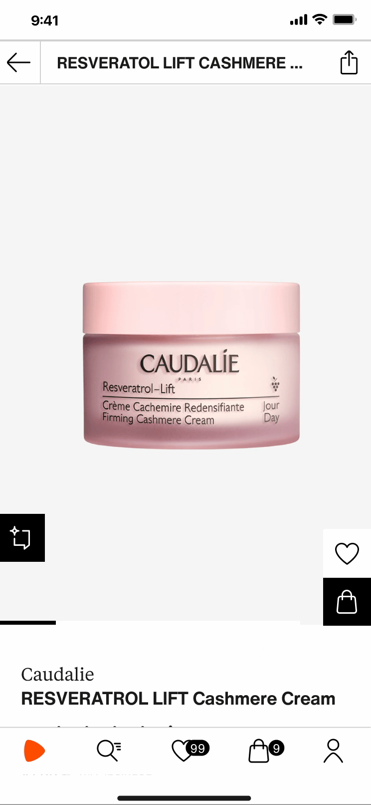

01
Beauty Advisor & Assurance
Zalando · 0→1 · live iOS DE


What I built
A skincare advisor working in two modes. Assurance (lives on PDP) gives a match or no-match verdict on the product page, with the reason. In case of no-match, Assurance also provides recommendations with the current PDP as anchor product.
Advisor (lives on profile) runs a guided diagnostic and provides personalized recommendations listing the top 5 products for the user from the whole skincare assortment, across 7 categories.
Next step is to build Anticipator, to anticipate customer needs ahead of time with recommendations.
Why it was hard
Skincare is a hard and extremely risky category to solve the recommendation problem for. The problem is genuine and deep, but the risks of recommending products are equally high.
Suitability is not one score. It combines skin-type fit, concern efficacy and product specification fit across several dimensions, including customer review signals, based on imperfect data. The logic for generating ranks, correcting imperfect data by creating a parallel database, and the challenge of ranking good products against each other, is a tough one.
The system has to generate trust — we need explainability for each recommendation. Every rationale we show is provable through ingredient analysis and is not a marketing message. In a skin-health category, a plausible-but-wrong answer costs more trust than silence.
What it moved